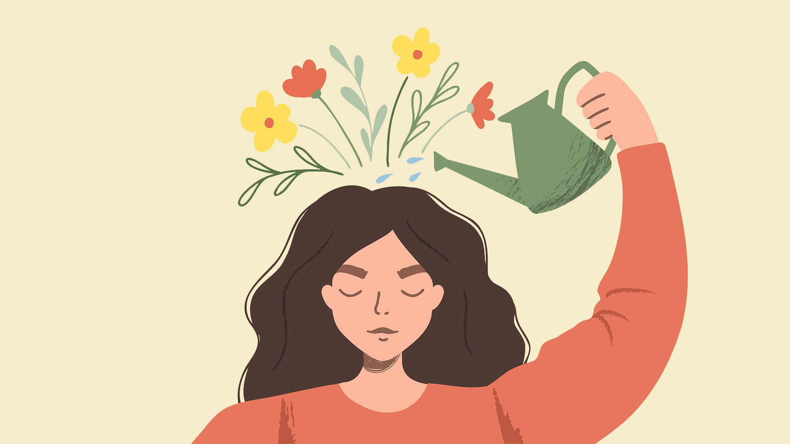

Ten Things You Can Do for Your Mental Health

- 1. Value yourself:
- 2. Take care of your body:
- 3. Surround yourself with good people:
- 4. Give yourself:
- 5. Learn how to deal with stress:
- 6. Quiet your mind:
- 7. Set realistic goals:
- 8. Break up the monotony:
- 9. Avoid alcohol and other drugs:
- 10. Get help when you need it:
Treat yourself with kindness and respect, and avoid self-criticism. Make time for your hobbies and favorite projects, or broaden your horizons. Do a daily crossword puzzle, plant a garden, take dance lessons, learn to play an instrument or become fluent in another language.
Taking care of yourself physically can improve your mental health. Be sure to:
- Eat nutritious meals
- Avoid smoking and vaping
- Drink plenty of water
- Drink plenty of water
- Exercise, which helps decrease depression and anxiety and improve moods
-Get enough sleep. Researchers believe that lack of sleep contributes to a high rate of depression in college students.
People with strong family or social connections are generally healthier than those who lack a support network. Make plans with supportive family members and friends, or seek out activities where you can meet new people, such as a club, class or support group.
Volunteer your time and energy to help someone else. You'll feel good about doing something tangible to help someone in need — and it's a great way to meet new people.
Like it or not, stress is a part of life. Practice good coping skills: Try One-Minute Stress Strategies, do Tai Chi, exercise, take a nature walk, play with your pet or try journal writing as a stress reducer. Also, remember to smile and see the humor in life. Research shows that laughter can boost your immune system, ease pain, relax your body and reduce stress.
Try meditating, Mindfulness and/or prayer. Relaxation exercises and prayer can improve your state of mind and outlook on life. In fact, research shows that meditation may help you feel calm and enhance the effects of therapy.
Decide what you want to achieve academically, professionally and personally, and write down the steps you need to realize your goals. Aim high, but be realistic and don't over-schedule. You'll enjoy a tremendous sense of accomplishment and self-worth as you progress toward your goal.
Although our routines make us more efficient and enhance our feelings of security and safety, a little change of pace can perk up a tedious schedule. Alter your jogging route, plan a road-trip, take a walk in a different park, hang some new pictures or try a new restaurant.
Keep alcohol use to a minimum and avoid other drugs. Sometimes people use alcohol and other drugs to "self-medicate" but in reality, alcohol and other drugs only aggravate problems.
Seeking help is a sign of strength — not a weakness. And it is important to remember that treatment is effective. People who get appropriate care can recover from mental illness and addiction and lead full, rewarding lives.